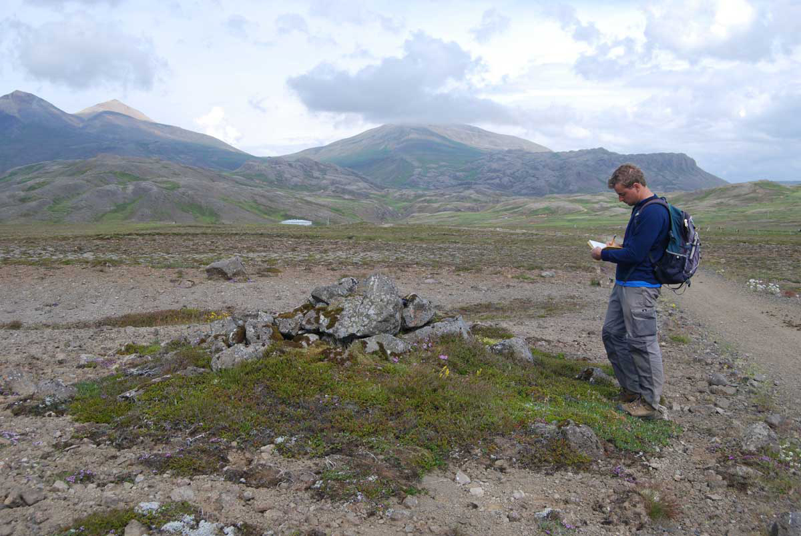
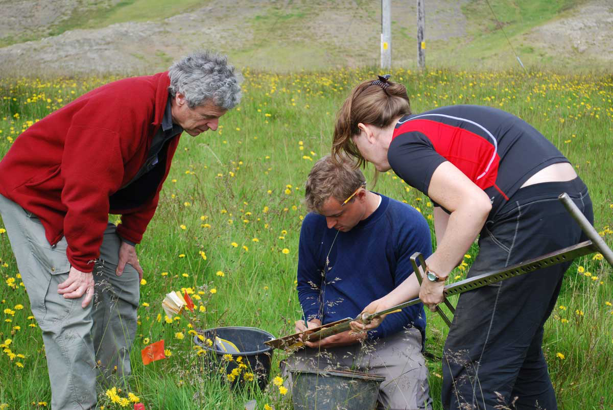
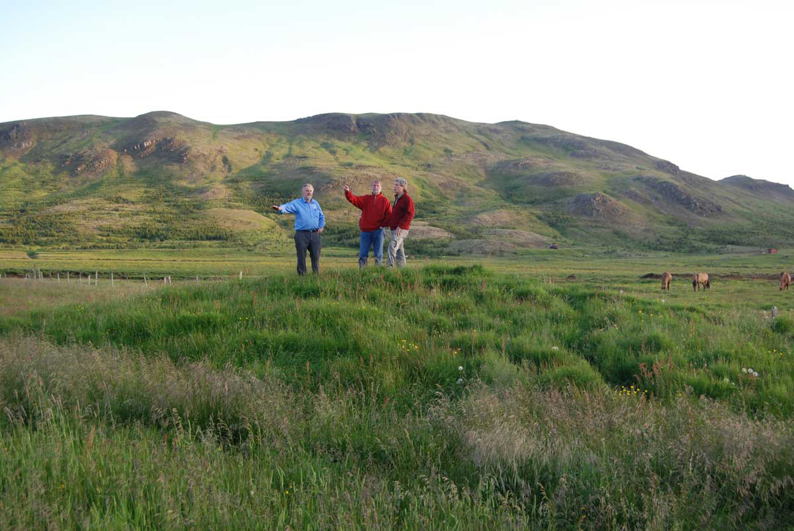
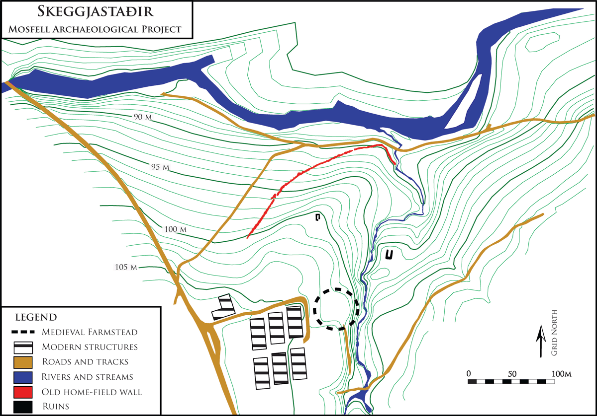
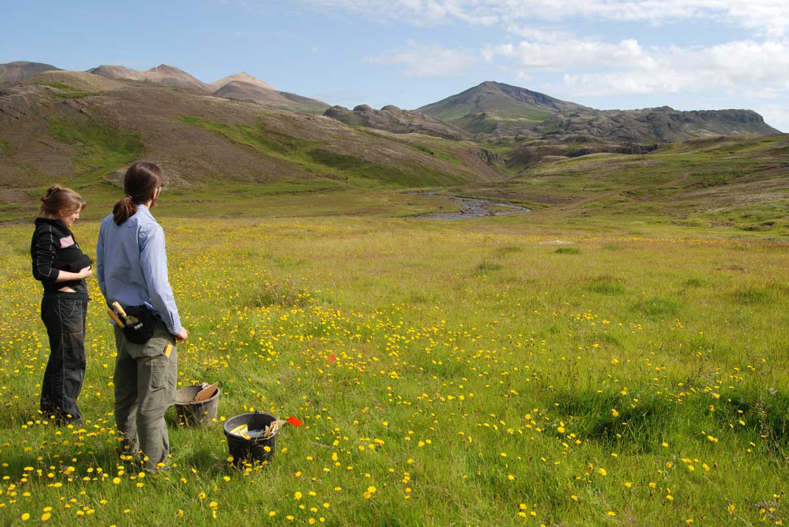
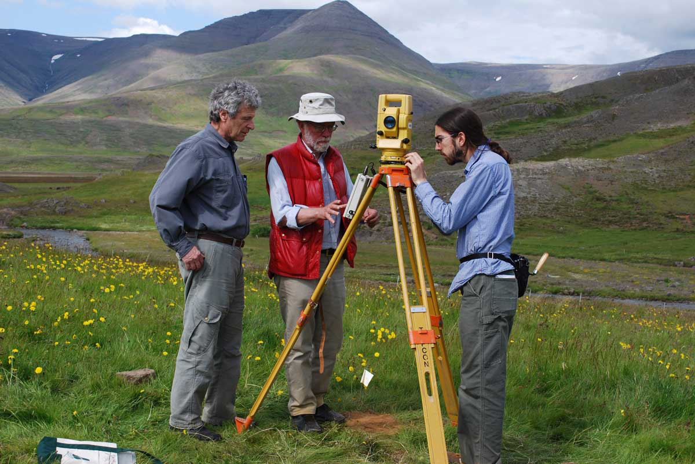

Archaeological Field Work | 2009 Field Season - Regional Survey in the Mosfell Valley
The overall goal of the 2009 fieldwork was to extend the area of coverage of the Mosfell Archaeological Project to the wider valley perspective by investigating a series of possible medieval farmsteads and sites in the Mosfell valley. The 2009 fieldwork of MAP focused on five goals:
- Investigation of textual sources, aerial photographs, and historical maps to locate potential medieval sites for survey and future research.
- Site visits to the farms of particular interest, including Helgadalur, Hraðastaðir, Skeggjastaðir, Æsustaðir. During these preliminary surveys we ground-checked the aerial photos and chose promising areas for sub-surface survey.
- Sub-surface coring targeted at each of a series of probable medieval farms to investigate features of particular interest and to test the preservation of the pre-modern deposits, and the potential for future work. Sub-surface survey consisted of soil cores up to a depth of 1 m with a coring device with an approximately 5 cm diameter. Coring was undertaken at Helgadalur, Hraðastaðir, Skeggjastaðir, Æsustaðir, Hrísbrú, and Leiruvogur.
- Extensive and systematic sub-surface coring at sites of particular interest that yielded the most promising preliminary results during initial surveys. This was done at the site of Skeggjastaðir.
- Locating and mapping old roads and cairns to increase our understanding of the old road and trail system in the valley and build our model of the cultural landscape and travel-network in the valley. This was done by field-walking with a hand-held Garmin GPSMAP 60Cx GPS.
 Davide Zori recording a cairn next to the old road to Skeggjastaðir.
 Jesse Byock, Davide Zori, and Rhonda Bathurst examining soil core.
 Jesse Byock, Magnús Guðmundsson, and Bjarni Bjarnason on the Hraðastaðir mound.
 Map of Skeggjastaðir.
 Rhonda Bathurst and Colin Connors at Skeggjastaðir.
 Jesse Byock, Max Farrar, and Colin Connors surveying at Skeggjastaðir.